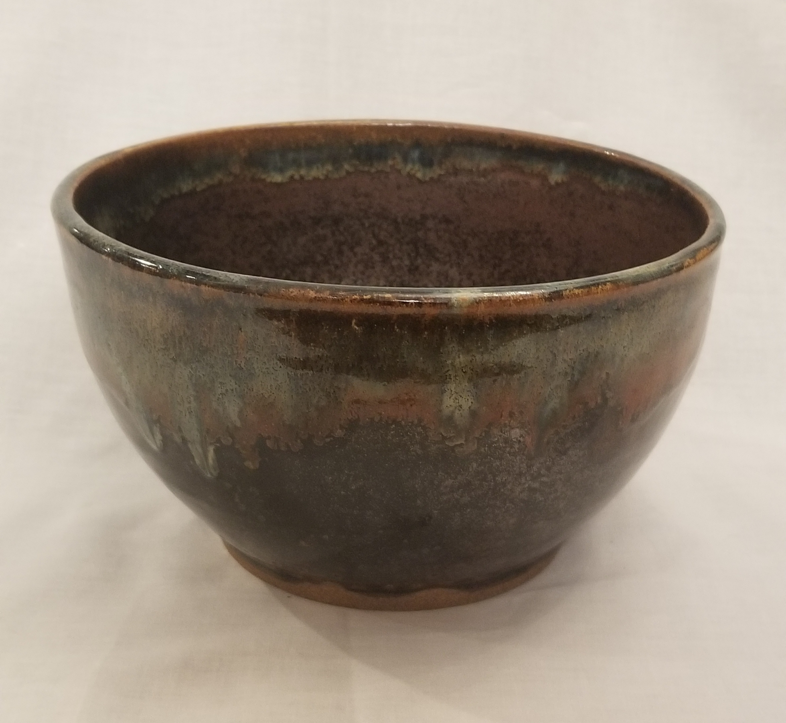
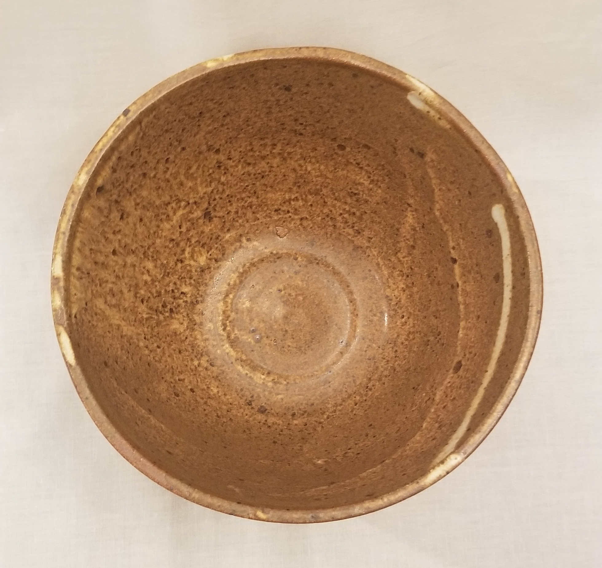
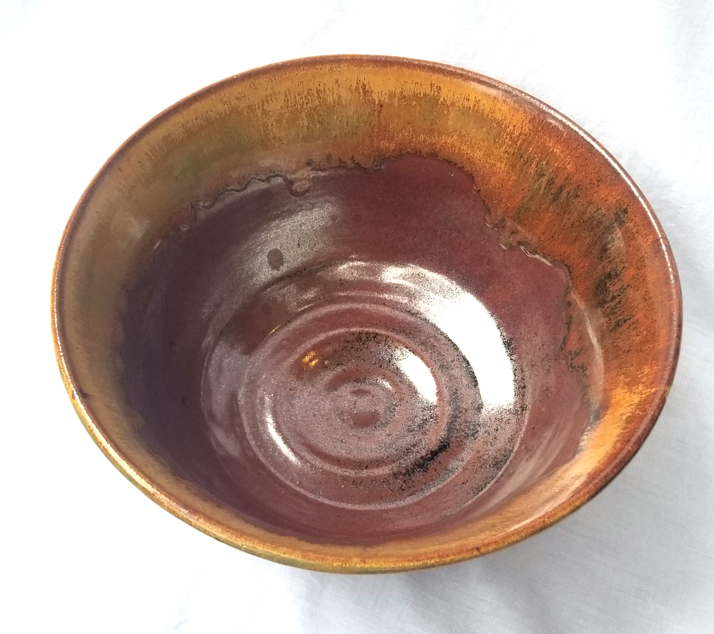
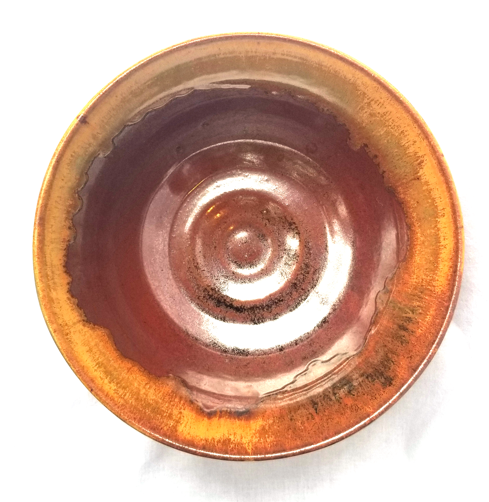
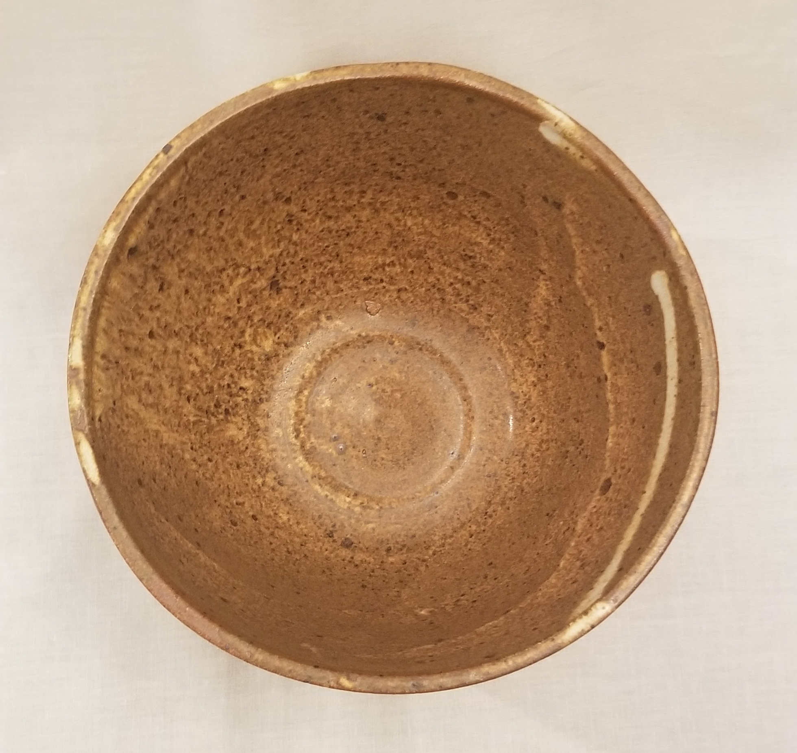
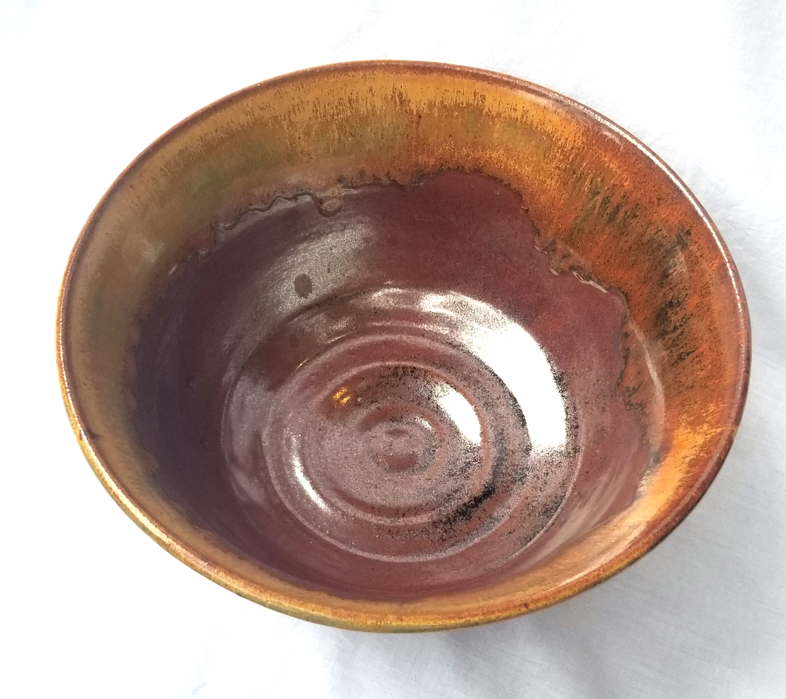
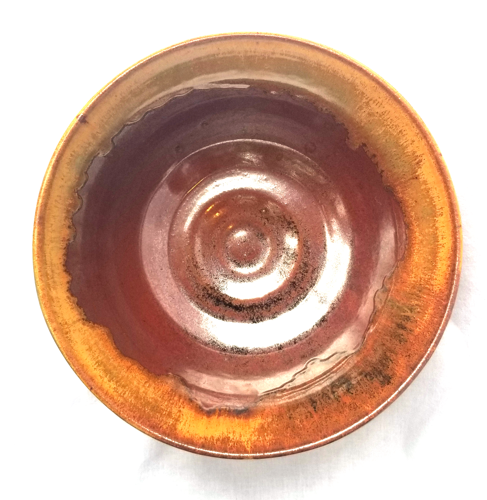
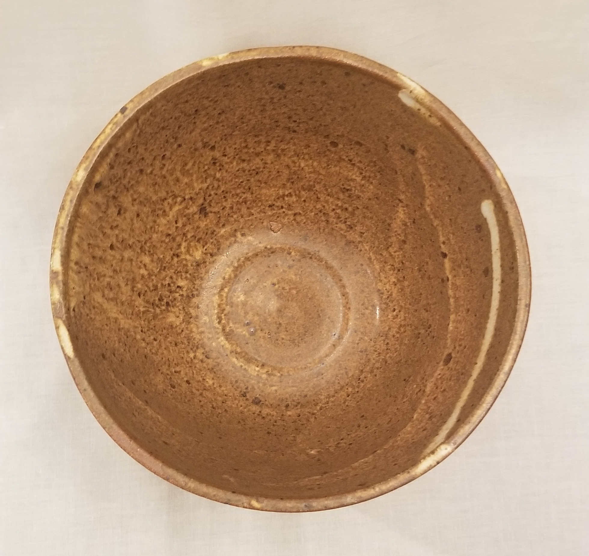
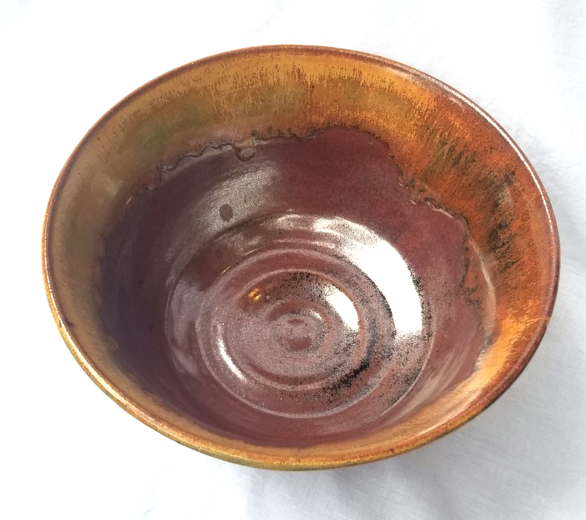
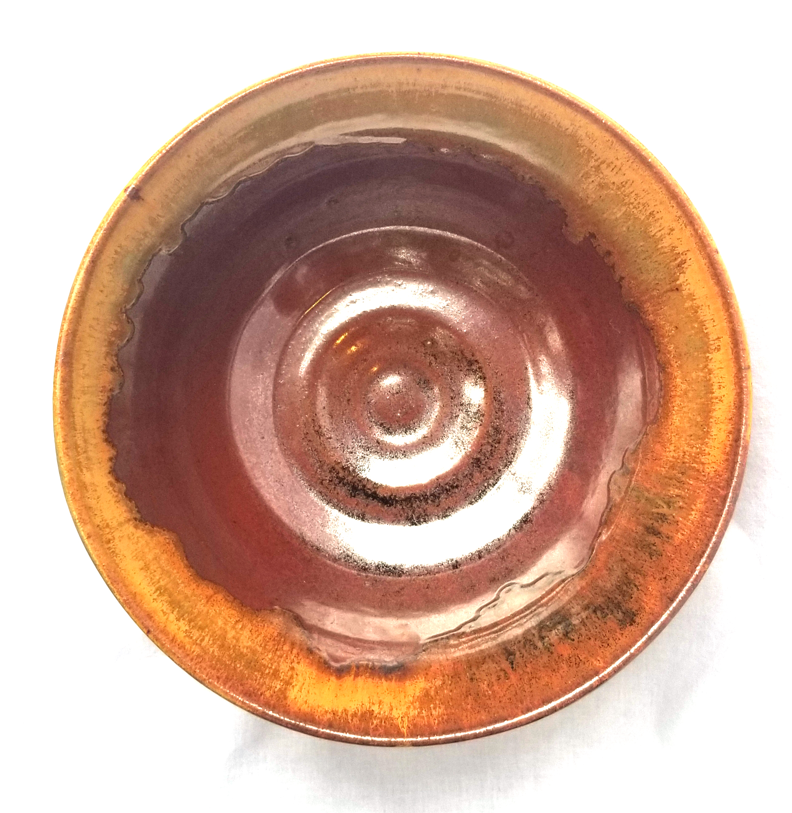

Bowls
 





I started throwing on a wheel when I was 12 years old, and have continued to develop my knowledge of ceramics since then. The following images are a selection of functional pieces I've created over the last two years (2019-2020). I work predominantly with a high-fire red clay body. I often try to play with texture and I love layering glazes and oxides to get different results.


